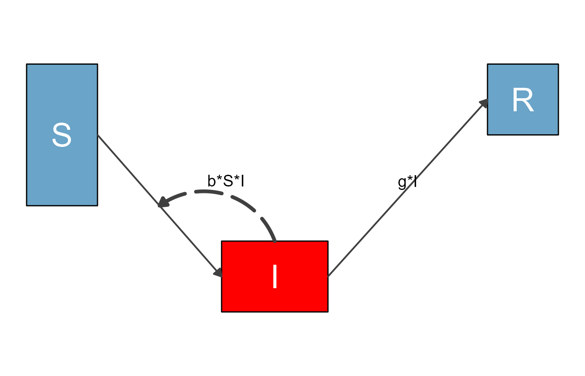
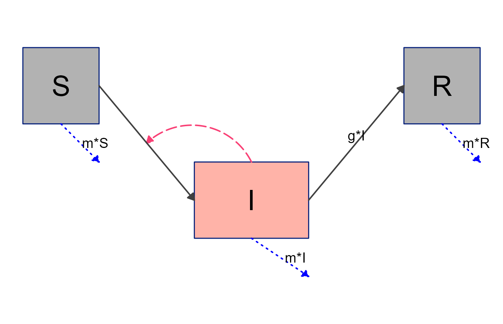
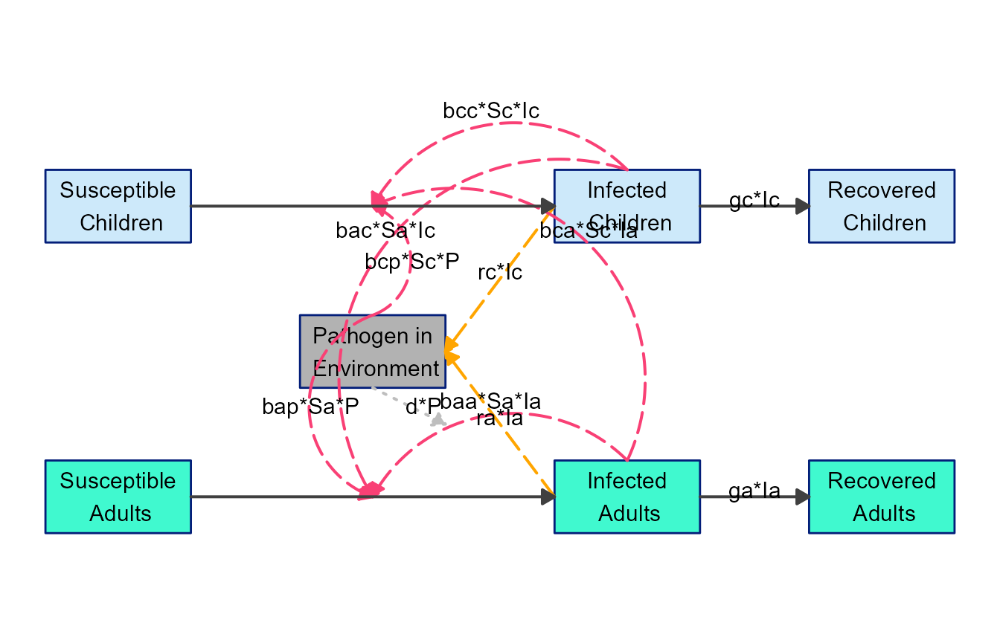
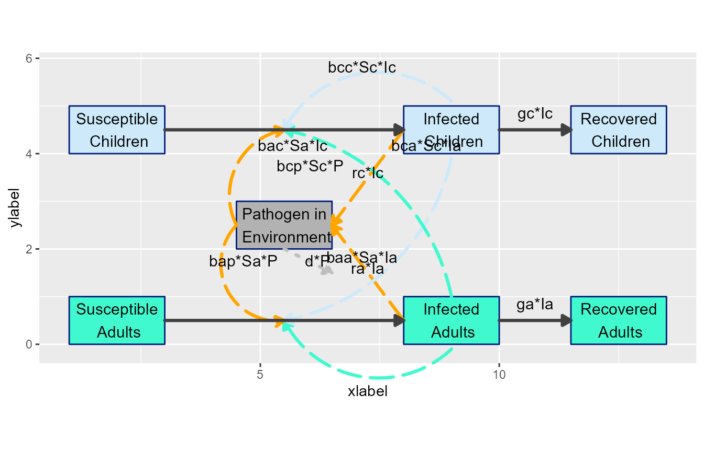

Modifiying diagrams with
update_diagram()
Source: vignettes/C_update_diagram_function.Rmd
C_update_diagram_function.RmdIntroduction
We assume you went through the previous vignettes, especially the getting started vignette. In this
vignette, you will learn how to use the update_diagrm()
function to further customize the look of your diagrams.
To re-cap, the workflow discussed in the previous vignettes goes like this
#specify model
sirmodel1 = list(variables = c("S","I","R"),
flows = list(S_flows = c("-b*S*I"),
I_flows = c("b*S*I","-g*I"),
R_flows = c("g*I")))
#optional layout information
sirsettings1 = list(varlocations = matrix(data = c("S", "","R",
"", "I","" ),
nrow = 2, ncol = 3, byrow = TRUE),
varbox_x_size = c(1, 1.5, 1),
varbox_y_size = c(2, 1, 1),
varspace_x_size = c(1.5,2),
varspace_y_size = 0.5
)
#prepare diagram
diagram_list1 <- prepare_diagram(model_list = sirmodel1, model_settings = sirsettings1)
#make diagram
sir_diagram1 <- make_diagram(diagram_list = diagram_list1)
#plot diagram
plot(sir_diagram1)A quick look behind the scenes
Before we look at examples, let’s briefly discuss some aspects of what’s going on behind the scenes.
The function prepare_diagram() takes the model and
optional settings and returns a list (which we call
diagram_list here). This list object consists of 2 data
frames, one called variables and one called
flows. In each data frame, the elements (variables or
flows) are in the rows, and the columns indicate graphical settings,
e.g., the locations and the color. You can look at the
diagram_list data frames. Here are those two data frames
for the model above:
print(diagram_list1$variables)
#> id name xmin xmax ymin ymax xlabel ylabel outline_color fill_color label_text
#> 1 1 S 1.00 2.00 2.5 4.5 1.5 3.5 black #6aa4c8 S
#> 2 2 I 3.75 5.25 1.0 2.0 4.5 1.5 black #6aa4c8 I
#> 3 3 R 7.50 8.50 3.5 4.5 8.0 4.0 black #6aa4c8 R
#> label_color label_size
#> 1 white 10
#> 2 white 10
#> 3 white 10
print(diagram_list1$flows)
#> id name type from to xstart xend ystart yend xlabel ylabel
#> 1 1 m_gI main I R 5.25 7.500 1.5 4.0 6.3750 2.85000
#> 2 2 m_bSI main S I 2.00 3.750 3.5 1.5 2.8750 2.60000
#> 3 3 i_bSI interaction I <NA> 4.50 2.875 2.0 2.5 3.8125 2.85625
#> curvature line_color line_size line_type label_text label_color label_size
#> 1 0.0 grey25 0.7 solid g*I black 5
#> 2 0.0 grey25 0.7 solid black 5
#> 3 0.5 grey25 0.7 longdash b*S*I black 5
#> show_label arrow_size show_arrow
#> 1 TRUE 0.25 TRUE
#> 2 TRUE 0.25 TRUE
#> 3 TRUE 0.25 TRUEWhen flowdiagramr prepares the diagram, it groups flows into 4 different categories as follows:
- Main flows, which are flows that go from one box to another, and generally indicate physical/actual movement of units from one state to another (e.g., from susceptible to infected).
- Generator flows, which indicate some compartment pointing to another compartment, but not actually moving there (e.g. an infected individual shedding pathogen into the environment).
- Interaction flows, which indicate a variable interacting with another, without any actual flow (e.g., infected individuals infecting susceptible).
- External flows, which indicate entry into or exit out of the system, e.g., births and deaths to/from states that are not part of the model.
The model above does not have generator or external flows.
Each of the variables and flows is given location and styling
information. Sometimes those defaults are fine, but often you might want
to do some tweaking. A direct (but generally not recommended!) way is to
just edit the elements of the two data frames by hand. For instance this
code changes the color of the box for the I variable to red
and increases the size of the interaction flow showing the infection
process.
#make a copy
diagram_list2 <- diagram_list1
#change some styling
diagram_list2$variables$fill_color[2] <- "red"
diagram_list2$flows$line_size[3] <- 1.5This is how the updated diagram looks.
sir_diagram2 <- make_diagram(diagram_list2)
plot(sir_diagram2)
This way of manually updating is always possible, but it is a bit
tedious. To make updating the look of the various plot elements easier,
flowdiagramr contains a convenience function called
update_diagram(), which simply does the updating of the
elements in either of those data frames based on the supplied input. The
update_diagram() function needs two inputs. The first input
is the list returned by prepare_diagram(). The second input
is a list of named entries which specify what elements of the diagram
you want to update. The help file for update_diagram()
provides all the details for allowed inputs. The examples we explore now
show several of the options.
Example 1
We’ll start by repeating the changes we made above, now using
update_diagram().
To update specific elements (variables or flows), you need to provide
their names, as you will see below. You can get the names of all
elements by calling update_diagram() with only the
diagram_list element, like so:
update_diagram(diagram_list1)
#> No settings were provided; returning names of elements in diagram_list dataframes.
#> Variables: S, I, R
#> Flows: m_gI, m_bSI, i_bSIThe flow names are simply the equations without the math symbols, and prefaced by type of flow (m = main, i = interaction, g = generator, e = external). That can make for at times ugly names, but it shouldn’t be much of an issue.
If you wanted to make the same changes as we did manually above, this would do it
diagram_list3 <- update_diagram(diagram_list1,
diagram_settings = list(var_fill_color = c(I = "red"),
flow_line_size = c(i_bSI = 1.5)
)
)This produces the same figure as above:
sir_diagram3 <- make_diagram(diagram_list3)
plot(sir_diagram3)When you modify any input with update_diagram(), you
generally have two options. You can either specify individual elements
you want to update, which we just did. For convenience, there is also a
way to update multiple elements at the same time. Let’s say we wanted to
update the box colors of all variables and the colors of all main flows,
this would do it:
#define updated settings
diagram_settings1 = list(var_fill_color = c(all = "green"),
flow_line_color = c(main = "orange")
)
#update settings
diagram_list4 <- update_diagram(diagram_list1, diagram_settings1)
sir_diagram4 <- make_diagram(diagram_list4)
plot(sir_diagram4)
The reserved words for update_diagram() are
all (for variables or flows) and main,
interaction, generator and
external (only applicable for flows.)
Example 2
Next, we are revisiting one of the models discussed in the introductory vignette, the predator-prey model for pathogen and immune response. Here is the model again.
variables = c("Pat","Imm")
flows = list(Pat_flows = c("g*Pat*(1-Pat/pmax)", "-dP*Pat", "-k*Pat*Imm"),
Imm_flows = c("r*Pat*Imm", "-dI*Imm"))
mymodel = list(variables, flows)Here is the step that prepares the model, without any optional settings (for now).
diagram_list_v1 <- prepare_diagram(mymodel)This is how the default plot looks.
diagram_v1 <- make_diagram(diagram_list_v1)
plot(diagram_v1)
Using the update_diagram() function, it is possible to
change the look of most components of the diagram. First, we determine
the names of the different variables and flows:
update_diagram(diagram_list_v1)
#> No settings were provided; returning names of elements in diagram_list dataframes.
#> Variables: Pat, Imm
#> Flows: m_gPat1Patpmax, m_rPatImm, e_dIImm, e_dPPat, e_kPatImm, i_kPatImm, i_rPatImmNow we alter the look:
# define new settings
diagram_settings2 = list(var_fill_color = c(Pat = "blue", Imm = "red"),
var_label_color = c(all = "orange"),
flow_line_type = c(main = "dashed"),
flow_line_color = c(m_gPat1Patpmax = "green", m_rPatImm = "orange"),
flow_line_size = c(m_gPat1Patpmax = 1.5, e_dIImm = 2.5, interaction = 3.5),
flow_label_size = c(e_dIImm = 8, external = 2, interaction = 12),
flow_label_color = c(external = "cyan")
)
#update diagram list
diagram_list_v2 <- update_diagram(diagram_list_v1,diagram_settings2)The result of those modifications is this very ugly looking diagram:
diagram_v2 <- make_diagram(diagram_list_v2)
plot(diagram_v2)Note that for some settings, we used a mix of addressing elements by
name and some of the grouping shorthand. If you supply both, the way
update_diagram() works is to first process the groupings
(all/main/interaction/generator/external)
and then any individual ones. This means you can for instance change all
boxes to one color and then individually set one to yet another color.
We’ll show that in the next example.
Example 3
Let’s revisit the SIR model with natural births and deaths
# specify the model
variables = c("S","I","R")
flows = list(S_flows = c("n", "-b*S*I", "-m*S"),
I_flows = c("+b*S*I","-g*I", "-m*I"),
R_flows = c("g*I", "-m*R"))
sirmodel = list(variables = variables, flows = flows)Here are the defaults
#prepare diagram
diagram_list1 <- prepare_diagram(model_list = sirmodel)
#make diagram
sir_diagram1 <- make_diagram(diagram_list = diagram_list1)
#plot diagram
plot(sir_diagram1)
Here is an alternative version with layout changes specified through
update_diagram().
First, we get the names of all elements:
update_diagram(diagram_list1)
#> No settings were provided; returning names of elements in diagram_list dataframes.
#> Variables: S, I, R
#> Flows: m_gI, m_bSI, e_n, e_mS, e_mI, e_mR, i_bSINow we update the look of various elements.
#define new diagram settings outside the update function so we can reuse
diagram_settings = list(
var_fill_color = c(I = "#FFB3A8", all = "#b2b2b2"),
var_outline_color = c(all = "#031e79"),
var_label_color = c(all = "black"),
flow_line_color = c(interaction = "#f94075", external = "blue"),
flow_show_label = c(interaction = FALSE, e_n = FALSE),
flow_show_arrow = c(e_n = FALSE)
)
#update diagram
diagram_list2 <- update_diagram(diagram_list1,diagram_settings)
#make diagram
sir_diagram2 <- make_diagram(diagram_list = diagram_list2)
#plot diagram
plot(sir_diagram2)Note again the mix of updates applied to individual elements and
groups of elements. Groupings are always applied first, no matter the
order you supply them. Thus, first we set the color of all boxes to
gray, then change the I box individually to red.
Example 4
It is of course entirely possible to combine layout settings supplied
to prepare_diagram() with further styling through
update_diagram(). Here is an example, using the SIR model
we just explored.
#optional layout settings
sirsettings = list(varlocations = matrix(data = c("S", "","R",
"", "I","" ),
nrow = 2, ncol = 3, byrow = TRUE),
varbox_x_size = c(1, 1.5, 1),
varbox_y_size = c(1, 1, 1),
varspace_x_size = c(1,1),
varspace_y_size = 0.5
)
#prepare diagram
diagram_list3 <- prepare_diagram(model_list = sirmodel, model_settings = sirsettings)
#change styling
diagram_list4 <- update_diagram(diagram_list3,diagram_settings)
#make diagram
sir_diagram4 <- make_diagram(diagram_list = diagram_list4)
#plot diagram
plot(sir_diagram4)
Example 5
Finally, we’ll revisit the 7-compartment model we explored previously, and see if we can get closer to something that could be shown to the public 😄.
This is the model
variables = c("Sc","Ic","Rc","Sa","Ia","Ra","P")
flows = list(Sc_flows = c("-bcc*Sc*Ic","-bca*Sc*Ia","-bcp*Sc*P"),
Ic_flows = c("bcc*Sc*Ic","bca*Sc*Ia","bcp*Sc*P","-gc*Ic"),
Rc_flows = c("gc*Ic"),
Sa_flows = c("-bac*Sa*Ic","-baa*Sa*Ia","-bap*Sa*P"),
Ia_flows = c("bac*Sa*Ic","baa*Sa*Ia","bap*Sa*P","-ga*Ia"),
Ra_flows = c("ga*Ia"),
P_flows = c("rc*Ic","ra*Ia","-d*P")
)
mymodel = list(variables, flows)Basic layout settings
mysettings = list( varlocations = matrix(data = c("Sc", "", "Ic", "Rc",
"", "P", "", "",
"Sa", "", "Ia", "Ra"),nrow = 3, byrow = TRUE),
varbox_x_size = 2,
varspace_x_size = 1.5
)Prepare the diagram with layout settings.
diagram_list5 <- prepare_diagram(mymodel, mysettings)Figure out names of elements to update look of diagram
#get element names
update_diagram(diagram_list5)
#> No settings were provided; returning names of elements in diagram_list dataframes.
#> Variables: Sc, Ic, Rc, Sa, Ia, Ra, P
#> Flows: m_gcIc, m_gaIa, m_bccScIc_m_bcaScIa_m_bcpScP, m_bacSaIc_m_baaSaIa_m_bapSaP, g_rcIc, g_raIa, e_dP, i_bccScIc, i_bcaScIa, i_bcpScP, i_bacSaIc, i_baaSaIa, i_bapSaPApply all updates. Here we are changing a bunch of different components.
# define list of updates
diagram_settings2 = list(var_fill_color = c(Sc = "#cde9fa", Ic = "#cde9fa",
Rc = "#cde9fa", Sa = "#40f9cf",
Ia = "#40f9cf", Ra = "#40f9cf",
P = "#b2b2b2"),
var_outline_color = c(all = "#031e79"),
var_label_text = c(Sc = "Susceptible\n Children", Ic = "Infected\n Children", Rc = "Recovered\n Children",
Sa = "Susceptible\n Adults", Ia = "Infected\n Adults", Ra = "Recovered\n Adults",
P = "Pathogen in\n Environment"),
var_label_size = c(all = 4),
var_label_color = c(all = "black"),
flow_line_color = c( interaction = "#f94075",
external = "gray",
generator = "orange"),
flow_label_size = c(all = 4)
)
diagram_list6 <- update_diagram(diagram_list5, diagram_settings2) Now we make the diagram and plot it.
model_plot6 <- make_diagram(diagram_list6)
plot(model_plot6)
Better, but not quite there. One can use
update_diagram() more than once of course, so let’s make
further changes. Specifically, we’ll modify some of the locations for
the arrows and labels.
The way update_diagram() processes any change to
location of boxes, arrows, labels, etc. is by applying a change
relative to the current position. This means if you
think a box for some variable should be extended a bit to the left, you
can apply an offset of say -0.25 to var_xmin for that
variable. Similarly, if you think the box should be extended upwards a
bit, you can apply 0.25 to the var_ymax value. As you
adjust positioning, it might be helpful to turn on the grid lines in the
diagram, which are by default turned off. You can do so by setting
with_grid = TRUE in make_diagram().
Here is a simple example where we moved a few of the labels
# define list of updates
diagram_settings3 = list(flow_ylabel = c(m_gcIc = 0.25, m_gaIa = 0.25) )
diagram_list7 <- update_diagram(diagram_list6, diagram_settings3)
model_plot7 <- make_diagram(diagram_list7, with_grid = TRUE)
plot(model_plot7)Next, let’s move some arrows around to make things look less messy. Note that start and end points for arrows are specified as relative to the current value, however curvature is an absolute value. Positive values curve in one direction, negative in the other, and 0 means no curvature. We are also changing a few flow colors to make things clearer.
# define list of updates
diagram_settings4 = list(flow_curvature = c(i_baaSaIa = -0.5, i_bccScIc = 0.5,
i_bacSaIc = -0.3, i_bcaScIa = 0.3,
g_raIa = 0, g_rcIc = 0, i_bcpScP = -0.5),
flow_xstart = c(i_bcpScP = -1, i_bapSaP = -1),
flow_ystart = c(i_bcpScP = -0.5, i_bapSaP = -0.5, i_bacSaIc = -1.1,
i_baaSaIa = -1.1, i_bccScIc = 0.1),
flow_line_color = c(i_baaSaIa = "#40f9cf", i_bacSaIc = "#cde9fa",
i_bapSaP = "orange", i_bcpScP = "orange",
i_bccScIc = "#cde9fa", i_bcaScIa = "#40f9cf"),
flow_line_size = c(all = 1.1)
)
diagram_list8 <- update_diagram(diagram_list7, diagram_settings4)
model_plot8 <- make_diagram(diagram_list8, with_grid = TRUE)
plot(model_plot8)
Now we need to adjust the labels
# define list of updates
diagram_settings5 = list(flow_xlabel = c(i_bcaScIa = 1, i_bacSaIc = 4,
i_bapSaP = -1.25, i_bcpScP = -2.25,
g_raIa = 0.15, g_rcIc = 0.15),
flow_ylabel = c(i_bcaScIa = -2.5, i_bacSaIc = -0.5,
i_baaSaIa = -2.15, i_bccScIc = -0.5,
e_dP = -0.5,
g_raIa = 0.5, g_rcIc = -0.75)
)
diagram_list9 <- update_diagram(diagram_list8, diagram_settings5)
model_plot9 <- make_diagram(diagram_list9, with_grid = FALSE)
plot(model_plot9)This is now looking like a pretty decent diagram that could be used for public consumption 😄. Granted, adjusting the arrows and labels can be a bit fiddly, but we think it’s still easier and better than firing up your favorite drawing software. Also, it’s likely easier to update here if you make changes to the model.
Next steps
By combining layout settings supplied to
prepare_diagram() and styling applied through
update_diagram(), you can easily customize the look of the
diagram. Often, this should allow you to produce a diagram that looks
ready to use.
In those instances where you want to make further changes that are
not currently supported by this workflow (e.g., if you want to change
one of the variable boxes to a circle), flowdiagramr
can provide you with the complete code that generates the
ggplot object, which you can then edit manually. The next vignette explains how to
do that.